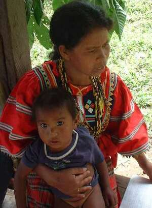

hiba1 
/hiba/
Var.1: iba
v_rt.
“hold_on_lap”
vt.
for someone (eggiba/eg-iba, miggiba/mig-iba/inggiba/in-iba, giba, agent, eg><ø-) to hold someone or something (eggibeen, eggibe:n, inggiba/ing-iba/miggiba/mig-iba/piggiba/pig-iba, giba/iba, theme, eg><en-) in (or on) their lap
Si amè ka eggiba keykew su kenè a egpekeeleg.
Father will hold you on lap for I can't carry you.
Eng. hold in lap; lap, on; nurse
Tag. kandungín; kalungin
Ceb. sabak
Ilo.: sakluten
OCM: Burden Carrying (482)
DDP: Leg (2.1.3.2)
Online dict status: -
Usage level: M
Updated by: RJH,TME,QDL,RAA,QDL,RJH
Last updated: 29/Jul/2014
This page last updated: 28-Dec-2019
Copyright © 2009-2014, Matigsalug Language Christian Association, Inc